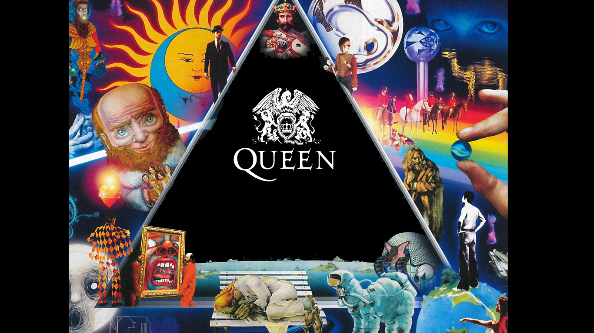

ROCK PROGRESIVO
El género del rock progresivo (llamado en inglés progressive rock o prog rock) es un subgénero nacido del rock a finales de los 60, que vivió su mayor auge en la primera mitad de la siguiente década, cuando los artistas del género estaban frecuentemente en las primeras posiciones en las encuestas de lectores de las principales revistas de música popular en Inglaterra y Estados Unidos, con álbumes en las primeras posiciones como el deTubullar Bells, de Mike Oldfield.
El adjetivo progresivo se refiere al carácter innovador que tuvo en un principio el género (concebido como una evolución en el progreso de la música rock) y a la importancia que le da a la progresión armónica: una de sus características principales es el paso gradual de una sonoridad bucólica (acústica, folk, modal, de tiempo lento) a otra totalmente urbana, con matices impresionistas (música eléctrica, tensa, influenciada por el blues y el jazz).
Una de las influencias principales de este tipo de música se encuentra en la música minimalista. Los instrumentos más comunes para este tipo de música son la guitarra eléctrica, bajo, batería.
Entre sus representantes más destacados se encuentran Pink Floyd, King crimson, Yes, Génesis, Rush, Jethro Tull, dream theater, tool.
